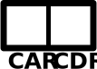

SlytherLisp Introduction¶
Cons Cells: Building Blocks of PL¶
A cons cell (short for “construct”) is a data structure for which we can build many others from. It consists of two references to other objects.
{kind=link}
| CAR: | Contents of the address register |
|---|---|
| CDR: | Contents of the decrement register |
Both can be a reference (e.g., pointer) to anything.
Building Lists using Cons Cells¶
Suppose we want to represent a list using cons cells. We can take inspiration from linked lists:
- CAR will be a reference to the list item.
- CDR will be a reference to the next cell.
- The last item in the list will have a CDR with the special value NIL.
For example, here is a cons cell diagram for the list (42 69 613):
{kind=link}
What is SlytherLisp?¶
- SlytherLisp is a programming language.
- You’re going to implement an interpreter for this language.
Basic Syntax¶
SlytherLisp uses s-expressions as its unit of syntax. For example, to write
in SlytherLisp, you would use:
(/ (expt 2 3) (* 4 5))
Built-in Math Functions
+ expt remainder
- sqrt ceil
* abs floor
/ floordiv
More Built-in Functions¶
print, which takes n arguments and prints them separated by spaces on the same line (just like Python!):(print "Hello, World!")
input, which prompts for a line of input and returns the typed string.(input "What is your name? ") ;; => "Jack"
Variables¶
The define syntax can be used to define a variable:
(define variable-name value)
For example:
(define name (input "What is your name? "))
(print "Nice to meet you," name)
Defining Our Own Functions¶
Using the define syntax, we can also add to the language with our own
functions:
(define (function-name parameter-name...) statement-1 ... statement-n)
For example, we could define a function to determine if a number is even or not.
(define (is-even? n)
(not (remainder n 2)))
(is-even? 10) ;; => #t
(is-even? 11) ;; => #f
Selection: Using if¶
if is a syntax which looks like this:
(if predicate consequent alternative)
Here is an example:
(define age (make-integer (input "How old are you? ")))
(print (if (<= age 18)
"Minors not allowed."
"Welcome"))
What’s Special About if?¶
Suppose we want to define our own if function, like so:
(define (my-if predicate consequent alternative)
(if predicate consequent alternative))
What could go wrong?
Functions vs. Macros¶
In SlytherLisp, there’s two different kinds of things you can put at the beginning of an s-expression to be called:
| Functions: | What you are familiar with: eval is called recursively on the
parameters, then the function is called on the results. |
|---|---|
| Macros: | Macros don’t get the convenience of having their parameters evaluated for them: they have to choose when (and if) this happens. Instead of returning a result, macros return an AST to replace their position. |
What can users make?¶
- Functions: Primitive (built-in) and user crafted
- Macros: Primitive only – user crafted macros can be added to your implementation for extra credit
Both macros and functions are first class, and can be passed around just like normal data. They even both live in the same namespace as variables.
Recursion¶
Recursion is SlytherLisp’s only technique for iteration. For example, to compute the sum of numbers from 1 to 100:
(define (sum-to-100)
(define (sum-iter n a)
(if (= 0 n)
a
(sum-iter (- n 1) (+ n a))))
(sum-iter 100 0))
Some kinds of recursion can be optimized into simple loops. We will learn about this in the coming weeks.
Scoping¶
- A scope refers to the period of which a variable is visible.
- Languages limit the scope of variables to be just within the function to help
avoid the risk of collision in two identically named variables. But it raises
the question: what does it mean to be within a function?
- In lexical scoping [1], the variable is visible when it is within the same function structure-wise.
- In dynamic scoping, the variable is visible when it is within the same function environment-wise.
| [1] | Also called “static scoping”. |
Lexical Scoping¶
SlytherLisp uses lexical scoping: a variable is in scope when it is within the same function structure-wise.
(define (reference base)
(define (get-absolute offset)
(+ base offset))
get-absolute)
(define my-reference (reference 10))
(my-reference 5) ;; => 15
Closures¶
The term closure refers to a function and it’s definition environment. It’s what kept track of the variables where the function was defined in the previous example.
We can use closures to maintain internal state:
(define (counter value)
(define (change-value delta)
(set! value (+ value delta)) ;; set! will change a variable
;; rather than define a new
value)
change-value)
(define my-counter (counter 5))
(print (my-counter 2)) ;; => 7
(print (my-counter -3)) ;; => 4
Brainstorm uses for closures with your learning group.
Closures in JavaScript¶
/* A Lehmer Linear Congruential Generator in JavaScript */
function prng(seed) {
var x = seed;
function next() {
x = (16807 * x) % 2147483647;
return x;
}
return next;
}
Dynamic Scoping¶
In dynamic scoping, the calling environment determines the visible variables. Suppose that SlytherLisp used dynamic scoping:
(define (func-a x)
(+ x y))
(define (func-b x)
(define y 2)
(func-a x))
(print (func-b 10)) ;; => 12
Exercise¶
Consider this code:
(define (func x)
(define y x)
(define (f z)
(+ y z))
f)
(define adder (func 3))
(define y 2)
(print (adder -2))
- What would be printed if the language used Dynamic Scoping?
- What would be printed if the language used Lexical Scoping?
Why would we ever choose dynamic scoping?¶
- Easy to implement
- First class functions don’t need to carry around definition environment
Scoping in the Wild¶
- Static: C, C++, Pascal, Python
- Dynamic: C preprocessor macros, Early Lisps, Emacs Lisp, Bash
- Allows both: Common Lisp, Scheme, Perl